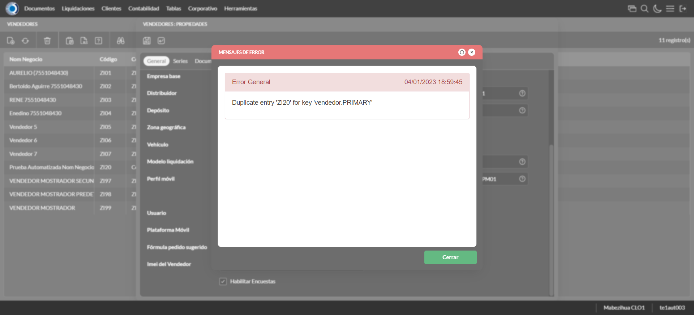
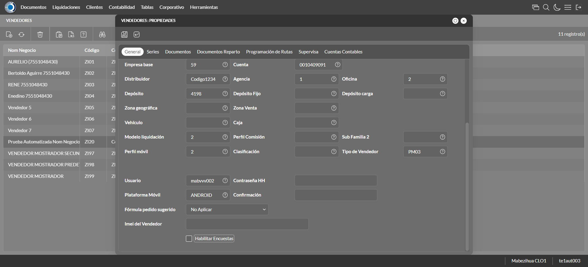
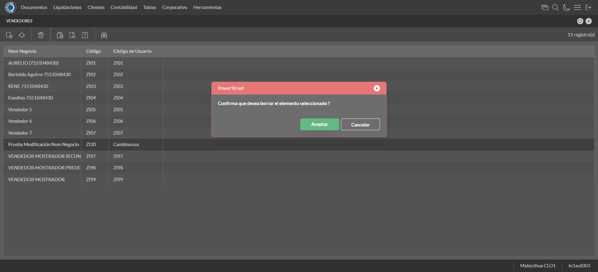

Desarrollado por : Area de Testing PWST
Fecha y hora de inicio : 2023-01-04 12:57:47
Duracion : 0:02:59.825910
Resultado : Total 8，Correctos 7 ，Errores 1 ，Taza de resultado 87.50%
Resumen 87.50% Errores 1 Fallidos 0 Correctos 7 Test realizados 8
| Caso de Prueba | Total | Correctos | Fallido | Error | Detalles | Captura del error |
| Vendedores.Test: Escenario 1 de Vendedores | 8 | 7 | 0 | 1 | Detalles | |
test |
ft1_1: 2023-01-04 12:57:48,737 - root - INFO - Se abre el chrome
2023-01-04 12:57:51,006 - root - INFO - Entra a la URL
2023-01-04 12:57:51,145 - root - INFO - Maximiza la pantalla
Traceback (most recent call last):
File "C:\Users\jsand\AppData\Local\Programs\Python\Python310\lib\site-packages\selenium-4.4.0-py3.10.egg\selenium\webdriver\remote\switch_to.py", line 87, in frame
frame_reference = self._driver.find_element(By.ID, frame_reference)
File "C:\Users\jsand\AppData\Local\Programs\Python\Python310\lib\site-packages\selenium-4.4.0-py3.10.egg\selenium\webdriver\remote\webdriver.py", line 856, in find_element
return self.execute(Command.FIND_ELEMENT, {
File "C:\Users\jsand\AppData\Local\Programs\Python\Python310\lib\site-packages\selenium-4.4.0-py3.10.egg\selenium\webdriver\remote\webdriver.py", line 434, in execute
self.error_handler.check_response(response)
File "C:\Users\jsand\AppData\Local\Programs\Python\Python310\lib\site-packages\selenium-4.4.0-py3.10.egg\selenium\webdriver\remote\errorhandler.py", line 243, in check_response
raise exception_class(message, screen, stacktrace)
selenium.common.exceptions.NoSuchElementException: Message: no such element: Unable to locate element: {"method":"css selector","selector":"[id="mainFrame"]"}
(Session info: chrome=108.0.5359.125)
Stacktrace:
Backtrace:
(No symbol) [0x0073F243]
(No symbol) [0x006C7FD1]
(No symbol) [0x005BD04D]
(No symbol) [0x005EC0B0]
(No symbol) [0x005EC22B]
(No symbol) [0x0061E612]
(No symbol) [0x006085D4]
(No symbol) [0x0061C9EB]
(No symbol) [0x00608386]
(No symbol) [0x005E163C]
(No symbol) [0x005E269D]
GetHandleVerifier [0x009D9A22+2655074]
GetHandleVerifier [0x009CCA24+2601828]
GetHandleVerifier [0x007E8C0A+619850]
GetHandleVerifier [0x007E7830+614768]
(No symbol) [0x006D05FC]
(No symbol) [0x006D5968]
(No symbol) [0x006D5A55]
(No symbol) [0x006E051B]
BaseThreadInitThunk [0x76796BD9+25]
RtlGetFullPathName_UEx [0x77B58FD2+1218]
RtlGetFullPathName_UEx [0x77B58F9D+1165]
During handling of the above exception, another exception occurred:
Traceback (most recent call last):
File "C:\Users\jsand\AppData\Local\Programs\Python\Python310\lib\site-packages\selenium-4.4.0-py3.10.egg\selenium\webdriver\remote\switch_to.py", line 90, in frame
frame_reference = self._driver.find_element(By.NAME, frame_reference)
File "C:\Users\jsand\AppData\Local\Programs\Python\Python310\lib\site-packages\selenium-4.4.0-py3.10.egg\selenium\webdriver\remote\webdriver.py", line 856, in find_element
return self.execute(Command.FIND_ELEMENT, {
File "C:\Users\jsand\AppData\Local\Programs\Python\Python310\lib\site-packages\selenium-4.4.0-py3.10.egg\selenium\webdriver\remote\webdriver.py", line 434, in execute
self.error_handler.check_response(response)
File "C:\Users\jsand\AppData\Local\Programs\Python\Python310\lib\site-packages\selenium-4.4.0-py3.10.egg\selenium\webdriver\remote\errorhandler.py", line 243, in check_response
raise exception_class(message, screen, stacktrace)
selenium.common.exceptions.NoSuchElementException: Message: no such element: Unable to locate element: {"method":"css selector","selector":"[name="mainFrame"]"}
(Session info: chrome=108.0.5359.125)
Stacktrace:
Backtrace:
(No symbol) [0x0073F243]
(No symbol) [0x006C7FD1]
(No symbol) [0x005BD04D]
(No symbol) [0x005EC0B0]
(No symbol) [0x005EC22B]
(No symbol) [0x0061E612]
(No symbol) [0x006085D4]
(No symbol) [0x0061C9EB]
(No symbol) [0x00608386]
(No symbol) [0x005E163C]
(No symbol) [0x005E269D]
GetHandleVerifier [0x009D9A22+2655074]
GetHandleVerifier [0x009CCA24+2601828]
GetHandleVerifier [0x007E8C0A+619850]
GetHandleVerifier [0x007E7830+614768]
(No symbol) [0x006D05FC]
(No symbol) [0x006D5968]
(No symbol) [0x006D5A55]
(No symbol) [0x006E051B]
BaseThreadInitThunk [0x76796BD9+25]
RtlGetFullPathName_UEx [0x77B58FD2+1218]
RtlGetFullPathName_UEx [0x77B58F9D+1165]
During handling of the above exception, another exception occurred:
Traceback (most recent call last):
File "C:\xampp\htdocs\versiones\automatizaciones\AutoPWST\01VE\testCase\Vendedores.py", line 36, in test
self.driver.switch_to.frame("mainFrame")
File "C:\Users\jsand\AppData\Local\Programs\Python\Python310\lib\site-packages\selenium-4.4.0-py3.10.egg\selenium\webdriver\remote\switch_to.py", line 92, in frame
raise NoSuchFrameException(frame_reference)
selenium.common.exceptions.NoSuchFrameException: Message: mainFrame
|
|
||||
test_000: Ingresa a la base de datos |
pt1_2: 2023-01-04 12:57:54,416 - root - INFO - Escribe el usuario
2023-01-04 12:57:54,622 - root - INFO - Escribe la contraseña
2023-01-04 12:57:54,827 - root - INFO - Se dio clic en el boton ingresar
2023-01-04 12:57:56,164 - root - INFO - Ejecutar Enterprise
2023-01-04 12:58:00,235 - root - INFO - Cambia entre pestañas
|
|
||||
test_001: Abre menu y ejecuta pantalla |
pt1_3: 2023-01-04 12:58:13,883 - root - INFO - Abre la pantalla de Familias de Impuestos
2023-01-04 12:58:15,038 - root - INFO - La pantalla ejecutada es Familias de Impuestos
2023-01-04 12:58:15,038 - root - INFO - Captura: C:\xampp\htdocs\versiones\automatizaciones\AutoPWST\01VE\report\img screen：20230104_12_58_15.png
2023-01-04 12:58:15,730 - root - INFO - Se da clic en el registro creado, para proceder a modificarlo.
2023-01-04 12:58:17,867 - root - INFO - Se hace el cambio de pestaña para continuar con el registro nuevo
2023-01-04 12:58:28,160 - root - INFO - Se presiona el boton 'Eliminar', para eliminar el registro.
2023-01-04 12:58:28,271 - root - INFO - Se hace el cambio de pestaña para continuar con el registro nuevo
2023-01-04 12:58:33,954 - root - INFO - Se da clic en el registro creado, para proceder a modificarlo.
2023-01-04 12:58:34,015 - root - INFO - Se presiona el boton 'Eliminar', para eliminar el registro.
2023-01-04 12:58:34,317 - root - INFO - Se hace el cambio de pestaña para continuar con el registro nuevo
2023-01-04 12:58:35,923 - root - INFO - Se da clic en el registro creado, para proceder a modificarlo.
2023-01-04 12:58:35,981 - root - INFO - Se presiona el boton 'Eliminar', para eliminar el registro.
2023-01-04 12:58:36,162 - root - INFO - Se da clic en el boton Guardar; se debe modificar la informacion del registro.
2023-01-04 12:58:36,728 - root - INFO - Se da clic en el registro creado, para proceder a eliminarlo.
2023-01-04 12:58:37,056 - root - INFO - Se presiona el boton 'Eliminar', para eliminar el registro.
2023-01-04 12:58:37,661 - root - INFO - Se confirma el eliminado del registro
2023-01-04 12:58:38,114 - root - INFO - Se presiona el boton 'Refrescar', para crear un nuevo registro igual al anterior.
2023-01-04 12:58:38,376 - root - INFO - Se presiona el boton 'Nuevo', para crear un nuevo registro.
|

|
||||
test_002: Abre la ventana de nuevo y crear un registro |
pt1_4: 2023-01-04 12:58:41,093 - root - INFO - Se abrio la pantalla para el ingreso de un registro nuevo.
2023-01-04 12:58:41,124 - root - INFO - El campo 'Codigo' si se encuentra visible.
2023-01-04 12:58:41,155 - root - INFO - El campo 'Código Alternativo' si se encuentra visible.
2023-01-04 12:58:41,187 - root - INFO - El campo 'Código Usuario' si se encuentra visible.
2023-01-04 12:58:41,218 - root - INFO - El campo 'Nom Negocio' si se encuentra visible.
2023-01-04 12:58:41,234 - root - INFO - El campo 'Documento de Identidad' si se encuentra visible.
2023-01-04 12:58:41,276 - root - INFO - El campo 'Calle' si se encuentra visible.
2023-01-04 12:58:41,303 - root - INFO - El campo 'Nro. Puerta' si se encuentra visible.
2023-01-04 12:58:41,335 - root - INFO - El campo 'Esquinas' si se encuentra visible.
2023-01-04 12:58:41,365 - root - INFO - El campo 'Teléfonos' si se encuentra visible.
2023-01-04 12:58:41,390 - root - INFO - El campo 'Empresa base' si se encuentra visible.
2023-01-04 12:58:41,406 - root - INFO - El campo 'Cuenta base' si se encuentra visible.
2023-01-04 12:58:41,437 - root - INFO - El campo 'Distribuidor base' si se encuentra visible.
2023-01-04 12:58:41,468 - root - INFO - El campo 'Agencia' si se encuentra visible.
2023-01-04 12:58:41,500 - root - INFO - El campo 'Oficina' si se encuentra visible.
2023-01-04 12:58:41,531 - root - INFO - El campo 'Depósito' si se encuentra visible.
2023-01-04 12:58:41,562 - root - INFO - El campo 'Modelo liquidación' si se encuentra visible.
2023-01-04 12:58:41,582 - root - INFO - El campo 'Perfil móvil' si se encuentra visible.
2023-01-04 12:58:41,610 - root - INFO - El campo 'Tipo de Vendedor' si se encuentra visible.
2023-01-04 12:58:41,641 - root - INFO - El campo 'Plataforma Móvil' si se encuentra visible.
2023-01-04 12:58:41,672 - root - INFO - El campo 'Fórmula pedido sugerido' si se encuentra visible.
2023-01-04 12:58:41,720 - root - INFO - El campo 'Habilitar Encuestas' si se encuentra visible.
2023-01-04 12:58:41,770 - root - INFO - Ingresa el codigo del nuevo registro
2023-01-04 12:58:41,843 - root - INFO - Ingresa el codigo alternativo del nuevo registro
2023-01-04 12:58:41,944 - root - INFO - Ingresa el codigo usuario del nuevo registro
2023-01-04 12:58:42,049 - root - INFO - Ingresa el Nom Negocio del nuevo registro
2023-01-04 12:58:42,155 - root - INFO - Ingresa el Documento de Identidad del nuevo registro
2023-01-04 12:58:42,267 - root - INFO - Ingresa la calle del nuevo registro
2023-01-04 12:58:42,369 - root - INFO - Ingresa el nro puerta del nuevo registro
2023-01-04 12:58:42,446 - root - INFO - Ingresa la Esquina 1 del nuevo registro
2023-01-04 12:58:42,544 - root - INFO - Ingresa la Esquina 2 del nuevo registro
2023-01-04 12:58:42,613 - root - INFO - Ingresa el Telefono 1 del nuevo registro
2023-01-04 12:58:42,684 - root - INFO - Ingresa el Telefono 2 del nuevo registro
2023-01-04 12:59:03,169 - root - INFO - Captura: C:\xampp\htdocs\versiones\automatizaciones\AutoPWST\01VE\report\img screen：20230104_12_59_03.png
2023-01-04 12:59:03,360 - root - INFO - Se hace el cambio de pestaña para continuar con el registro nuevo
2023-01-04 12:59:03,957 - root - INFO - Se presiona el boton 'Nuevo', para crear un nuevo registro.
2023-01-04 12:59:06,072 - root - INFO - El campo 'Serie base' si se encuentra visible.
2023-01-04 12:59:06,103 - root - INFO - El campo 'Tipo Impresora' si se encuentra visible.
2023-01-04 12:59:06,134 - root - INFO - El campo 'Puerto Impresora' si se encuentra visible.
2023-01-04 12:59:06,166 - root - INFO - El campo 'Impresora + Lenguaje' si se encuentra visible.
2023-01-04 12:59:06,197 - root - INFO - El campo 'Clave correlativo' si se encuentra visible.
2023-01-04 12:59:06,228 - root - INFO - El campo 'Desde número' si se encuentra visible.
2023-01-04 12:59:06,291 - root - INFO - El campo 'Hasta número' si se encuentra visible.
2023-01-04 12:59:08,117 - root - INFO - Ingresa la Clave Correlativo del nuevo registro
2023-01-04 12:59:08,184 - root - INFO - Ingresa Desde Numero del nuevo registro
2023-01-04 12:59:08,253 - root - INFO - Ingresa Hasta Numero del nuevo registro
2023-01-04 12:59:08,307 - root - INFO - Se presiona el boton 'Guardar', para guardar el registro.
2023-01-04 12:59:08,824 - root - INFO - Se hace el cambio de pestaña para continuar con el registro nuevo
2023-01-04 12:59:09,399 - root - INFO - Se presiona el boton 'Nuevo', para crear un nuevo registro.
2023-01-04 12:59:09,927 - root - INFO - El campo 'Tipo documento' si se encuentra visible.
2023-01-04 12:59:09,990 - root - INFO - El campo 'Modelo de Impresión' si se encuentra visible.
2023-01-04 12:59:12,371 - root - INFO - Se presiona el boton 'Guardar', para guardar el registro.
2023-01-04 12:59:13,249 - root - INFO - Se hace el cambio de pestaña para continuar con el registro nuevo
2023-01-04 12:59:13,819 - root - INFO - Se presiona el boton 'Nuevo', para crear un nuevo registro.
2023-01-04 12:59:14,370 - root - INFO - El campo 'Tipo Documento 2' si se encuentra visible.
2023-01-04 12:59:14,401 - root - INFO - El campo 'Modelo de Impresión' si se encuentra visible.
2023-01-04 12:59:16,869 - root - INFO - Se presiona el boton 'Guardar', para guardar el registro.
2023-01-04 12:59:17,979 - root - INFO - Se da clic en el boton Guardar; se debe crear un nuevo registro.
|

|
||||
test_003: Repetir el registro creado anteriormente |
pt1_5: 2023-01-04 12:59:19,378 - root - INFO - Se presiona el boton 'Refrescar', para crear un nuevo registro igual al anterior.
2023-01-04 12:59:20,018 - root - INFO - Se presiona el boton 'Nuevo', para crear un nuevo registro igual al anterior.
2023-01-04 12:59:21,648 - root - INFO - Se abrio la pantalla para el ingreso de un registro nuevo.
2023-01-04 12:59:21,679 - root - INFO - El campo 'Codigo' si se encuentra visible.
2023-01-04 12:59:21,711 - root - INFO - El campo 'Código Alternativo' si se encuentra visible.
2023-01-04 12:59:21,758 - root - INFO - El campo 'Código Usuario' si se encuentra visible.
2023-01-04 12:59:21,798 - root - INFO - El campo 'Nom Negocio' si se encuentra visible.
2023-01-04 12:59:21,821 - root - INFO - El campo 'Documento de Identidad' si se encuentra visible.
2023-01-04 12:59:21,852 - root - INFO - El campo 'Calle' si se encuentra visible.
2023-01-04 12:59:21,883 - root - INFO - El campo 'Nro. Puerta' si se encuentra visible.
2023-01-04 12:59:21,918 - root - INFO - El campo 'Esquinas' si se encuentra visible.
2023-01-04 12:59:21,942 - root - INFO - El campo 'Teléfonos' si se encuentra visible.
2023-01-04 12:59:21,975 - root - INFO - El campo 'Empresa base' si se encuentra visible.
2023-01-04 12:59:22,004 - root - INFO - El campo 'Cuenta base' si se encuentra visible.
2023-01-04 12:59:22,024 - root - INFO - El campo 'Distribuidor base' si se encuentra visible.
2023-01-04 12:59:22,055 - root - INFO - El campo 'Agencia' si se encuentra visible.
2023-01-04 12:59:22,087 - root - INFO - El campo 'Oficina' si se encuentra visible.
2023-01-04 12:59:22,118 - root - INFO - El campo 'Depósito' si se encuentra visible.
2023-01-04 12:59:22,150 - root - INFO - El campo 'Modelo liquidación' si se encuentra visible.
2023-01-04 12:59:22,181 - root - INFO - El campo 'Perfil móvil' si se encuentra visible.
2023-01-04 12:59:22,212 - root - INFO - El campo 'Tipo de Vendedor' si se encuentra visible.
2023-01-04 12:59:22,244 - root - INFO - El campo 'Plataforma Móvil' si se encuentra visible.
2023-01-04 12:59:22,259 - root - INFO - El campo 'Fórmula pedido sugerido' si se encuentra visible.
2023-01-04 12:59:22,299 - root - INFO - El campo 'Habilitar Encuestas' si se encuentra visible.
2023-01-04 12:59:22,347 - root - INFO - Ingresa el codigo del nuevo registro
2023-01-04 12:59:22,417 - root - INFO - Ingresa el codigo alternativo del nuevo registro
2023-01-04 12:59:22,494 - root - INFO - Ingresa el codigo usuario del nuevo registro
2023-01-04 12:59:22,618 - root - INFO - Ingresa el Nom Negocio del nuevo registro
2023-01-04 12:59:22,704 - root - INFO - Ingresa el Documento de Identidad del nuevo registro
2023-01-04 12:59:22,796 - root - INFO - Ingresa la calle del nuevo registro
2023-01-04 12:59:22,861 - root - INFO - Ingresa el nro puerta del nuevo registro
2023-01-04 12:59:22,951 - root - INFO - Ingresa la Esquina 1 del nuevo registro
2023-01-04 12:59:23,033 - root - INFO - Ingresa la Esquina 2 del nuevo registro
2023-01-04 12:59:23,124 - root - INFO - Ingresa el Telefono 1 del nuevo registro
2023-01-04 12:59:23,200 - root - INFO - Ingresa el Telefono 2 del nuevo registro
2023-01-04 12:59:44,601 - root - INFO - Se da clic en el boton Guardar; se debe crear un nuevo registro.
2023-01-04 12:59:45,607 - root - INFO - Captura: C:\xampp\htdocs\versiones\automatizaciones\AutoPWST\01VE\report\img screen：20230104_12_59_45.png
2023-01-04 12:59:46,771 - root - INFO - Captura: C:\xampp\htdocs\versiones\automatizaciones\AutoPWST\01VE\report\img screen：20230104_12_59_46.png
2023-01-04 12:59:52,324 - root - INFO - Se presiona el boton 'Cerrar', para cerrar el mensaje de duplicidad de llave primaria
2023-01-04 12:59:53,332 - root - INFO - Captura: C:\xampp\htdocs\versiones\automatizaciones\AutoPWST\01VE\report\img screen：20230104_12_59_53.png
2023-01-04 12:59:53,599 - root - INFO - Se presiona el boton 'Cerrar', para cerrar el mensaje de duplicidad de llave primaria
2023-01-04 12:59:53,785 - root - INFO - Se presiona el boton 'Cerrar', para cerrar la ventana
|
 | ||||
test_004: Modificar el registro |
pt1_6: 2023-01-04 12:59:54,122 - root - INFO - Se presiona el boton 'Refrescar', para crear un nuevo registro igual al anterior.
2023-01-04 12:59:55,760 - root - INFO - Se da clic en el registro creado, para proceder a modificarlo.
2023-01-04 13:00:00,595 - root - INFO - Ingresa el codigo alternativo del nuevo registro
2023-01-04 13:00:00,721 - root - INFO - Ingresa el codigo usuario del nuevo registro
2023-01-04 13:00:00,847 - root - INFO - Ingresa el Nom Negocio del nuevo registro
2023-01-04 13:00:00,964 - root - INFO - Ingresa el Documento de Identidad del nuevo registro
2023-01-04 13:00:01,109 - root - INFO - Ingresa la calle del nuevo registro
2023-01-04 13:00:01,202 - root - INFO - Ingresa el nro puerta del nuevo registro
2023-01-04 13:00:01,327 - root - INFO - Ingresa la Esquina 1 del nuevo registro
2023-01-04 13:00:01,442 - root - INFO - Ingresa la Esquina 2 del nuevo registro
2023-01-04 13:00:01,540 - root - INFO - Ingresa el Telefono 1 del nuevo registro
2023-01-04 13:00:01,635 - root - INFO - Ingresa el Telefono 2 del nuevo registro
2023-01-04 13:00:21,871 - root - INFO - Captura: C:\xampp\htdocs\versiones\automatizaciones\AutoPWST\01VE\report\img screen：20230104_13_00_21.png
2023-01-04 13:00:22,059 - root - INFO - Se hace el cambio de pestaña para continuar con el registro nuevo
2023-01-04 13:00:23,151 - root - INFO - Se da clic en el registro creado, para proceder a modificarlo.
2023-01-04 13:00:23,201 - root - INFO - Se presiona el boton 'Eliminar', para eliminar el registro.
2023-01-04 13:00:23,337 - root - INFO - Se presiona el boton 'Nuevo', para crear un nuevo registro.
2023-01-04 13:00:26,284 - root - INFO - Ingresa la Clave Correlativo del nuevo registro
2023-01-04 13:00:26,379 - root - INFO - Ingresa Desde Numero del nuevo registro
2023-01-04 13:00:26,484 - root - INFO - Ingresa Hasta Numero del nuevo registro
2023-01-04 13:00:26,538 - root - INFO - Se presiona el boton 'Guardar', para guardar el registro.
2023-01-04 13:00:26,852 - root - INFO - Se hace el cambio de pestaña para continuar con el registro nuevo
2023-01-04 13:00:27,948 - root - INFO - Se da clic en el registro creado, para proceder a modificarlo.
2023-01-04 13:00:29,635 - root - INFO - Se presiona el boton 'Guardar', para guardar el registro.
2023-01-04 13:00:29,902 - root - INFO - Se hace el cambio de pestaña para continuar con el registro nuevo
2023-01-04 13:00:31,000 - root - INFO - Se da clic en el registro creado, para proceder a modificarlo.
2023-01-04 13:00:33,504 - root - INFO - Se presiona el boton 'Guardar', para guardar el registro.
2023-01-04 13:00:34,605 - root - INFO - Se da clic en el boton Guardar; se debe modificar la informacion del registro.
|
 | ||||
test_005: Eliminar el registro creado |
pt1_7: 2023-01-04 13:00:35,016 - root - INFO - Se presiona el boton 'Refrescar', para proceder a eliminar el registro.
2023-01-04 13:00:36,662 - root - INFO - Se da clic en el registro creado, para proceder a eliminarlo.
2023-01-04 13:00:37,257 - root - INFO - Se hace el cambio de pestaña para continuar con el registro nuevo
2023-01-04 13:00:38,356 - root - INFO - Se da clic en el registro creado, para proceder a modificarlo.
2023-01-04 13:00:38,405 - root - INFO - Se presiona el boton 'Eliminar', para eliminar el registro.
2023-01-04 13:00:38,525 - root - INFO - Se hace el cambio de pestaña para continuar con el registro nuevo
2023-01-04 13:00:39,643 - root - INFO - Se da clic en el registro creado, para proceder a modificarlo.
2023-01-04 13:00:39,698 - root - INFO - Se presiona el boton 'Eliminar', para eliminar el registro.
2023-01-04 13:00:39,815 - root - INFO - Se hace el cambio de pestaña para continuar con el registro nuevo
2023-01-04 13:00:40,896 - root - INFO - Se da clic en el registro creado, para proceder a modificarlo.
2023-01-04 13:00:40,948 - root - INFO - Se presiona el boton 'Eliminar', para eliminar el registro.
2023-01-04 13:00:41,064 - root - INFO - Se da clic en el boton Guardar; se debe modificar la informacion del registro.
2023-01-04 13:00:41,627 - root - INFO - Se da clic en el registro creado, para proceder a eliminarlo.
2023-01-04 13:00:42,709 - root - INFO - Se presiona el boton 'Eliminar', para eliminar el registro.
2023-01-04 13:00:42,709 - root - INFO - Captura: C:\xampp\htdocs\versiones\automatizaciones\AutoPWST\01VE\report\img screen：20230104_13_00_42.png
2023-01-04 13:00:42,875 - root - INFO - Se confirma el eliminado del registro
2023-01-04 13:00:43,083 - root - INFO - Se presiona el boton 'Refrescar', para crear un nuevo registro igual al anterior.
2023-01-04 13:00:43,260 - root - INFO - Se presiona el boton 'Cerrar', para cerrar la pantalla de Categorias Fiscales.
|
 | ||||
test_006: Cerrar_Navegador |
pt1_8: 2023-01-04 13:00:47,491 - root - INFO - Se cierra chrome
|
|
||||
| Caso de prueba | 8 | 7 | 0 | 1 | Taza de resultado：87.50% | |